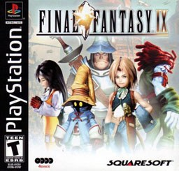
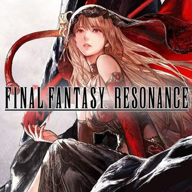
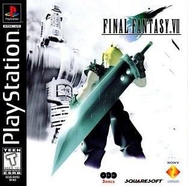
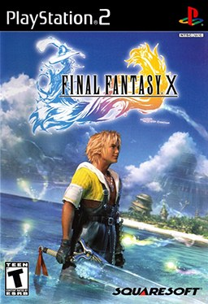

RPG au tour par tourFinal Fantasy IX
Square · PS1, PC, PS4, Switch, Xbox, mobile
Quatre disques, du premier coffre aux dernières quêtes annexes : trésors, Chocobos et tout ce qui peut se rater.
Interligne
Espacement des lettres
Police
RPG au tour par tour (HD-2D) · 2026
Le premier Final Fantasy en HD-2D, chapitre par chapitre : les Visions, les Chimères, les quêtes annexes, le Colisée et les superboss, jusqu'au platine.

Calculé à partir des cases que tu as cochées dans le guide, sur cet appareil.
Clique sur une partie pour l'ouvrir directement dans le guide. Les compteurs suivent les cases que tu coches.

RPG au tour par tourSquare · PS1, PC, PS4, Switch, Xbox, mobile
Quatre disques, du premier coffre aux dernières quêtes annexes : trésors, Chocobos et tout ce qui peut se rater.

RPG au tour par tourSquare · PS1, PC, PS4, Switch, Xbox, mobile
Midgar et au-delà : chaque coffre, chaque Matéria, et les secrets du monde ouvert de fin de partie.

RPG au tour par tourSquare · PS3, PS Vita, PS4, PC, Switch, Switch 2, Xbox One
Le pèlerinage de Spira temple par temple, puis les armes ultimes, les Chimères purgatrices et le Sphérier.